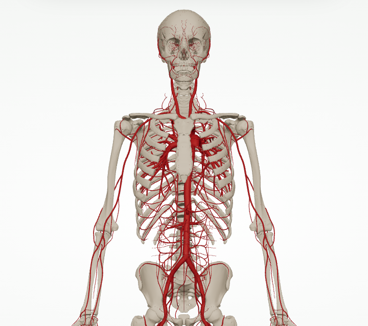

A fratura do processo coronoide demonstrada nas imagens a seguir pode ser classificada de acordo com O’DRISCOLL, como tipo:
LEVE OS 3 TIPOS. QUAL ESTÁ NA VITRINE?
AI, subtipo 1.
BI, subtipo 2.
CII.
DIII.
Vote na sua letra
a resposta chega mais tarde
OS 3 TIPOS DE O’DRISCOLL
CII: faceta anteromedial
O’DRISCOLL = LUGAR. REGAN-MORREY = ALTURA.
I
Ponta (no alto)
Subtipo 1 até 2 mm; subtipo 2 acima de 2 mm, menor que 50% da altura. Associada à tríade terrível.
II
Faceta anteromedial (borda medial)
Associada à instabilidade rotatória posteromedial em varo, com cabeça do rádio inteira. É a da prova.
III
Base (junção com a ulna)
O traço atravessa o corpo do processo; o subtipo 2 soma fratura transolecraniana. Vem com fratura-luxação do olécrano.
AI, subtipo 1: lasca de ponta até 2 mm; aqui a ponta não é o problema.
BI, subtipo 2: ainda é ponta, só maior. Medir altura é Regan-Morrey.
DIII: base e incisura estão preservadas; só a borda medial se soltou.
Segundo o Rockwood and Green’s Fractures in Adults, 10ª ed., cap. 40.
No próximo story: a promoção de hoje
SÓ HOJE, 27/11, ATÉ MEIA-NOITE
Plano anual R$ 19,90 por mês.
A nossa Black Friday: o preço mais barato que já existiu.
Resumo do Rockwood 10, cap. 40
Comentário com o livro
O QUE VOCÊ LEVA
Resumos dos temasComentários com o livroQuestões de prova
Só o anual entra
Telas ilustrativas
NA SUA SACOLA
Treino, plano e revisão no mesmo lugar.
Cronograma

Atlas 3D
Caderno de errosSimulados
Só o plano anual, só hoje, até meia-noite
Telas ilustrativas
ATÉ MEIA-NOITE
PLANO ANUAL
19,90 por mês
R$ 238,80 no ano
É a única promoção do ano e o preço mais barato que já existiu. O motivo é ser o ano de lançamento. Sinceramente, isso não vai acontecer nem no ano que vem.